TODO:
- Downloading fonts
- style tags
- skinny
- Dark themes
- Ideally a nested theme
- Goal is to change things in only 1 place
- BREAK THESE SECTIONS UP WHEN THEIR ORDER IS CLEAR
Creating a PocoCMS theme with the framework
The best way to create a highly versatile theme is to use the PocoCMS theme framework. It's contained entirely in the Base theme and is the launchpad for all PocoCMS framework themes, from Electro to Clerk to Skyscraper.
Here's the theme we'll create:

Overall strategy
The way to create a theme using the theme framework is simple: add a stylesheet and put all the changes in there. This guide takes you through every step of the way to create a theme using that technique.
Start a new project
Each Poco project is self-contained, with all theme data
contained within the .poco/themes subdirectory.
It's easy to copy a theme elsewhere when you're finished
but right now the safest thing to do is to start
with a test project. We'll call it mytheme.
poco -new test
cd test
Copy a theme you like
The first thing is to copy a theme you like.
-
To copy a theme, choose the theme you want to start with. Base is the best place to start. It is a pretty neutral theme meant to be customized.
-
Copy the
basetheme like this:
poco -from base -to mytheme
You're then informed:
PocoCMS mytheme created
Append themename.css to end of the theme's stylesheets rule
- Load the theme's
README.mdfile from your project's root directory by editing the file.poco/themes/mytheme/README.md. Obviously you will replacemythemewith whatever theme name you created. - It will look something like this, in the example where your theme was copied from the Base theme:
---
stylesheets:
- ../../css/root.css
- ../../css/reset.css
- ../../css/sizes.css
- ../../css/layout.css
- ../../css/type.css
- ../../css/mediacolors.css
---
- Immediately append the
.cssnamed after your theme to the end of thestylesheetslist:
stylesheets:
- ../../css/root.css
- ../../css/reset.css
- ../../css/sizes.css
- ../../css/layout.css
- ../../css/type.css
- ../../css/mediacolors.css
# ADD THE LINE BELOW. Replace gossip with your theme name:
- mytheme.css
The contents of the file .poco/themes/mytheme/mytheme.css are pretty much blank and
will have no affect on the theme so far:
/* OVERRIDE FRAMEWORK SIZES */
/* OVERRIDE FRAMEWORK LAYOUT */
/* OVERRIDE FRAMEWORK TYPOGRAPHY AND FONTS */
/* OVERRIDE MEDIA QUERIES. COLORS FOR LIGHT & DARK THEMES */
@media (prefers-color-scheme:light) {
:root {
}
}
@media (prefers-color-scheme:dark) {
:root {
}
}
- Let's test it.
Add the theme to your index.md file
- You should be in the directory you just created named
test. Open the fileindex.mdand add this line to the front matter so you can see the new theme:
---
theme: mytheme
---
Run poco -serve
- Open a new terminal window.
- Change to your test directory
- Run the server:
poco -serve
18 Jan 12:34:56 Web server running at:
http://localhost:54321
To stop the web server, press Ctrl+C
- Paste the URL
http://localhost:54321into a browser.
You should see the test site:
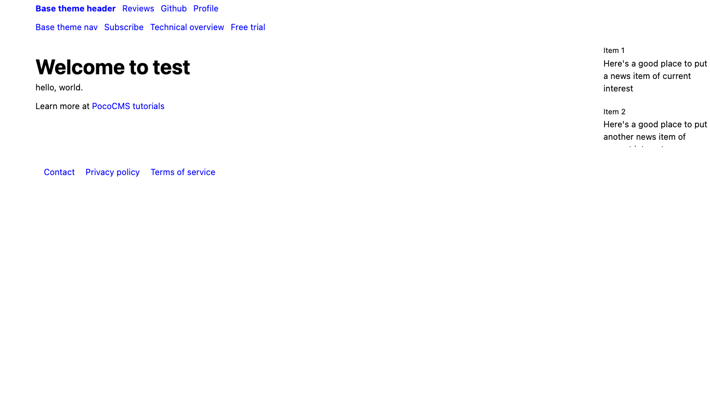
Right now we're just at parity with the Base theme. Next we'll learn about turning Base into something better for a blog.
The following steps are sort of random; you could do them in any order and still come out with the same results.
Create light and dark themes
The theme framework has built-in support for both light and dark themes.
It comes with many sensible defaults but none of them is sacred.
Load .poco/themes/mytheme/mytheme.css and let's start like this.
Feel free to copy and paste the code shown below.
@media (prefers-color-scheme:light) {
:root {
--a:var(--html-bg); /* Default link color */
--fg:#252627; /* Default text color */
--bg:white; /* Default background color */
--html-bg:#1C4284; /* Color enclosing skinny themes */
}
}
If you're not too familiar with CSS we'll explain what's happening in a moment.
Take a look
We'll assume you do the following every time you make a change to the theme style sheet. We aren't going to repeat this instruction because it would get super annoying to read. So whenever we say something like "take a look" or anytime you feel it necessary, and more is better when you're using CSS because minor errors can cause scary-looking problems, we mean:
- Switch to the terminal window that has your
testdirectory current. - Run poco to rebuild the site (the exact directory shown will be different)
poco
Site published to test/WWW/index.html
- Switch to the browser you have running the URL
http://localhost:54321 - Refresh the page.
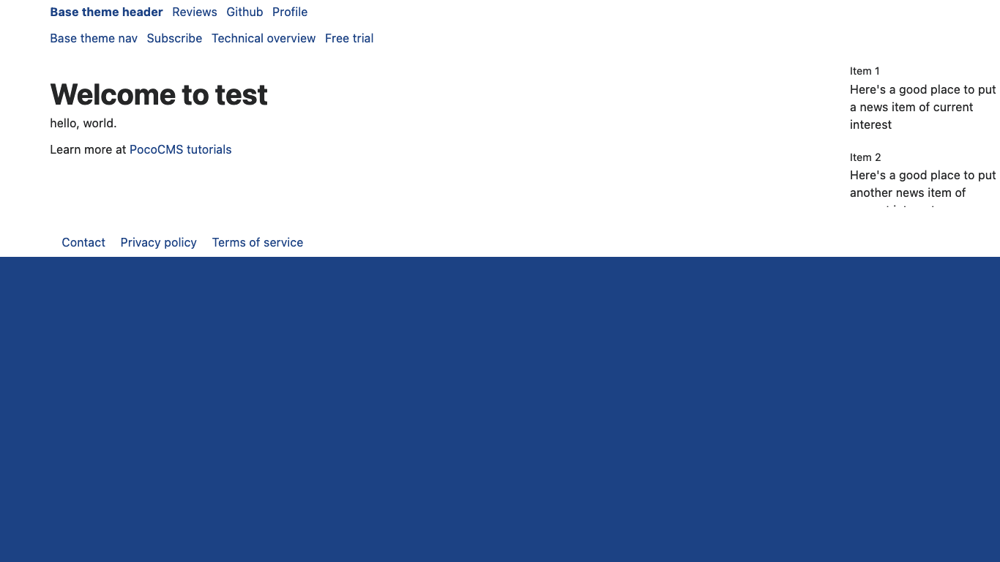
Override CSS styles
Recall that CSS is cascading, which means that you can simply add a rule to replace an old one. You don't have to get rid of the old one. Whichever rule is encountered most recently is the one that takes priority.
Let's see what's happening in this rule:
--bg:white; /* Default background color */
The --bg rule says "take the previously defined CSS variable named --bg and
replace it with the color white". Where is the original --bg rule? It comes
from the stylesheet named .poco/css/root.css, which has a number of such
rules. It defines default values that look fine on their own, but which
you're expected to replace as necessary in your theme. As you can see
in root.css and the comment above, it's the default background color for text.
When you see usage such as background-color:var(--bg); you'll know
to replace var(--bg) with the most recent value of --bg, which is
white in this example.
Why not just say background-color:white; and be done with it? Because
- It's better to limit the number of places that value occurs when you decide to make a change.
- Replacing direct color names with symbolic values makes it easier to create dark and light themes at the same time.
- It can be propagated elsewhere, which relates to the first point. Take a look at
this rule, also from
root.css:
--header-bg:var(--bg); /* Background color of header */
This rule says "use the same background for headers as the article uses". You can change it anytime, but frequently you'll prefer them to use the same background color.
You'll see it again for the nav:
--nav-bg:var(--bg); /* Background color of nav */
Now you can see a pattern:
--a:var(--html-bg); /* Default link color */
--html-bg:#1C4284; /* Color enclosing skinny themes */
This tells us that the background behind the theme background will be a bluish
color (#1C4284), and that links will use that color too.
Override CSS color rules with root
Put all rules that override CSS variables in the :root followed by { and }. They'll be hoisted to
the top of the priority list. Add this to .poco/themes/mytheme/mytheme.css:
:root {
--a:var(--html-bg); /* Default link color */
--html-bg:#1C4284; /* Color enclosing skinny themes */
..etc
}
Create the dark theme
Some users prefer light themes, but others like themes that work better at night. Browsers and operating systems now have built-in support for dark themes.
- Update the
@media (prefers-color-scheme:dark)portio of.poco/themes/mytheme/mytheme.csswith these dark theme values:
@media (prefers-color-scheme:dark) {
a,footer > a {color:#1B4284;}
header{color:#1B4284;}
header > ul > li:first-child > a > del {color:#E63946;} /* Strikethrough text gets different color */
:root {
--fg:white; /* Default text color */
--bg:#044389; /* Default background color */
--html-bg:#8EC7D4; /* Color enclosing skinny themes */
}
}
- Set your system to dark mode and take a look:
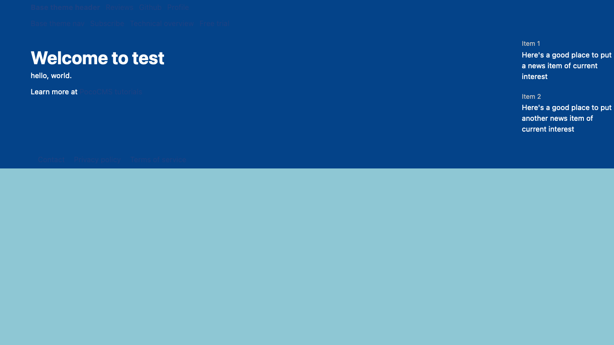
The beginnings of a dark theme... but suddenly the header and footer look like they're missing. They aren't. Their colors have been overridden and there are background/foreground color clashes.
Restyle links
Add this just after the comment reading OVERRIDE MEDIA QUERIES. COLORS FOR LIGHT & DARK THEMES
and just before the @media (prefers-color-scheme:light) code in .poco/themes/mytheme/mytheme.css:
header,footer {background-color:var(--html-bg);}
header>ul>li>a,header>ul>li>a:hover,header>ul>li>a:active {color:var(--bg)}
header,footer {background-color: var(--html-bg);}
nav ul li a {color:var(--a);}
nav a:active,nav a:hover {color:var(--html-bg);}
aside>p> a {color:var(--fg);}
footer>ul>li>a,footer>ul>li>a:hover,footer>ul>li>a:active {color:var(--bg);}
- Take a look now:
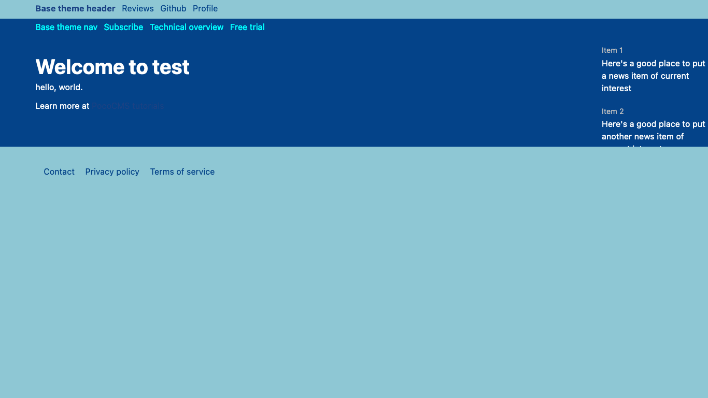
A brief look at what you just did:
Alter header and footer background colors Here the header and footer background colors are changed to be the same as the HTML background, which only matters on skinny themes:
header,footer {background-color:var(--html-bg);}
This isn't a skinny theme yet but it will be soon.
Change link colors A quick review. In most themes, everything in the header and footer is a link. The markup of a header file might look like this:
* [Base theme header](#)
* [Reviews](#)
* [Github](#)
* [Profile](#)
As you can see, it's a list of links, technically, an HTML unordered list of links. Normally an unordered list shows a bullet for each item and each item
has its own line in what is known as a block display. (Headings and paragraphs are normally blocks too,
at least in the <article> portion of a page.) The vast majority of sites re-style the
unordered list in the nav, header, and footer to appear in a horizontal line without the bullet characters.
Let's break down the CSS.
To restyle the header alone, PocoCMS uses very specific CSS so that only it gets that style. The theme
framework is meant for you to style header, nav, footer, aside, and article separately. In the line below,
you're targeting the header, then unordered lists in the header (<ul>/</ul>), and individual items
in that list (<li>/</li>), and finally links (<a href...</a>). And finally, we are setting the
background color of the link to the text background color with var(--bg):
header ul li a {color:var(--bg)}
The rest continues to restyle header links for when the cursor is held over
the link (hover) or when it's clicked (active):
header ul li a,header ul li a:hover,header ul li a:active {color:var(--bg)}
Roughly similar treatments are given to the footer and aside.
Make it a skinny theme
A skinny theme is one that floats in a separate background color or outline. The theme framework makes it simple to add that quality to your theme.
- Insert
../../css/medium-skinny.cssthis just after../../css/layout.cssin thestylesheetsportion of your theme README.md file. It's at.poco/themes/mytheme/README.md(replacemythemewith whatever theme directory name you chose):
stylesheets:
- ../../css/root.css
- ../../css/reset.css
- ../../css/sizes.css
- ../../css/layout.css
# Add either this or ../../css/skinny.css just after layout.css:
- "../../css/medium-skinny.css"
- ../../css/type.css
- ../../css/mediacolors.css
- "mytheme.css"
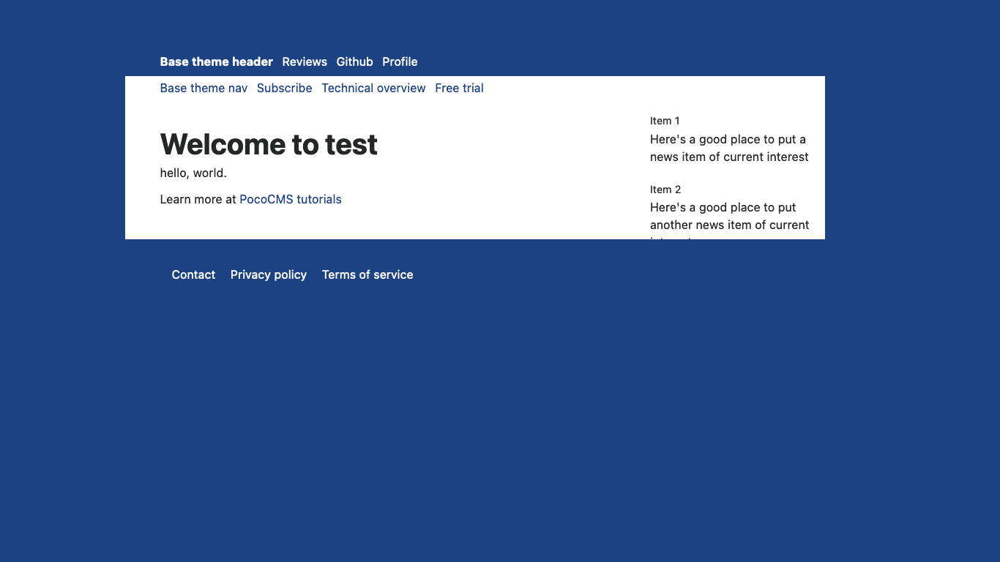
If you use skinny.css instead of medium-skinny.css the article area will be
even more narrow. These files change the margins, which you can think of as
pushing inward from the outside of the page. Now you see what the --html-bg CSS
variable is used for.
Be careful if you tweak these skinny stylesheets. It can get... tricky.
Add downloadable font for headings
The distinctive font you saw in the illustration of the finished theme is charmingly called Abril Fatface. The body text is called Montserrat.
They're both from Google and are freely usable for commercial purposes. Here's the easiest way to use a downloadable font that's make publicly available on a CDN like Google's.
Insert this line under stylesheets just before ../../css/type.css in your
theme README.md file at .poco/themes/mytheme/README.md:
- "https://fonts.googleapis.com/css2?family=Abril+Fatface&family=Montserrat:ital@0;1&display=swap"
The whole stylesheets section now looks like this:
File: .poco/themes/mytheme/README.md
stylesheets:
- ../../css/root.css
- ../../css/reset.css
- ../../css/sizes.css
- ../../css/layout.css
- "../../css/medium-skinny.css"
- "https://fonts.googleapis.com/css2?family=Abril+Fatface&family=Montserrat:ital@0;1&display=swap"
- ../../css/type.css
- ../../css/mediacolors.css
- "mytheme.css"
- In
.poco/themes/mytheme/mytheme.cssadd the following under theOVERRIDE FRAMEWORK TYPOGRAPHY AND FONTScomment:
/* OVERRIDE FRAMEWORK TYPOGRAPHY AND FONTS */
html * {font-family: 'Montserrat', sans-serif;font-size:large;line-height:1.5rem;}
article>h1,article>h2,article>h3{font-family: 'Abril Fatface', serif;}
header>ul>li> a,header>ul> li:first-child > a > del {
font-family: 'Abril Fatface', serif;
text-decoration:none;
}
- Look at your progress so far:
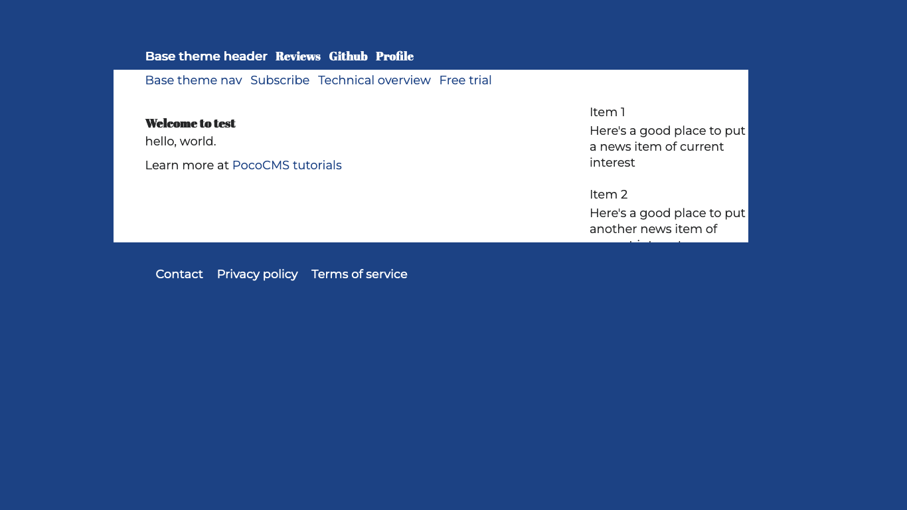
This line shows how to change most font attributes at once:
html * {font-family: 'Montserrat', sans-serif;font-size:large;line-height:1.5rem;}
This line uses the display font Abril Fatface on major headings in the article portion of your page, which means it won't change some parts like the header:
article>h1,article>h2,article>h3{font-family: 'Abril Fatface', serif;}
This changes unordered list elements in the header to use Abril Fatface,
not to change appearance when treated as a link, and to make those
same changes to any strikethrough usage in the list item in the header
(more on that later,
but it's the header>ul> li:first-child > a > del part).
header>ul>li> a,header>ul> li:first-child > a > del {
font-family: 'Abril Fatface', serif;
text-decoration:none;
}
Adjust font sizes
The Base theme is so boring it leaves all headings the same size. Let's fix that, because larger headings normally have more semantic importance. It's a helpful cue to the reader.
Just under the OVERRIDE FRAMEWORK SIZES comment in .poco/themes/mytheme/mytheme.css add this:
nav ul li a {font-size:small;}
article{padding-top:4rem;padding-right:3rem;}
article>h1,article>h2,article>h3{line-height:1em;}
article>h1 {font-size:4rem;padding-bottom:2rem;}
article>h2 {font-size:3rem;padding-bottom:1.5rem;}
article>h3 {font-size:1.75rem;padding-bottom:1rem;}
article>h4 {font-size:1.25rem;}
article>p, article>ul>li,article>ol>li {line-height:2rem;}
article>ul, article>ol {padding-bottom:1.5rem;}
The result is starting to hold more visual interest:
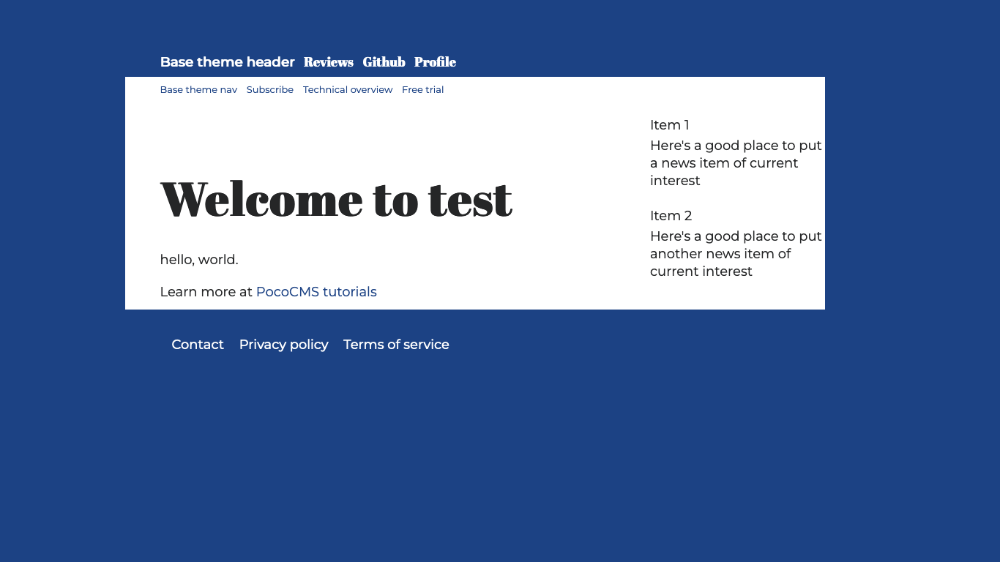
Change heading font size and padding
You can imagine that these additions make headings in the article bigger and better spaced:
article{padding-top:4rem;padding-right:3rem;}
article>h1,article>h2,article>h3{line-height:1em;}
article>h1 {font-size:4rem;padding-bottom:2rem;}
article>h2 {font-size:3rem;padding-bottom:1.5rem;}
article>h3 {font-size:1.75rem;padding-bottom:1rem;}
article>h4 {font-size:1.25rem;}
Reduce nav height and font size
This makes the nav shorter and with a smaller font, simply for stylistic reasons.
Using font-size:small instead of a fixed size makes it easier to scale the
web page for visually impaired users.
nav ul li a {font-size:small;}
Remember to change article list font size along with paragraph
You will surmise that this changes the line height of the article text:
article>p {line-height:2rem;}
It's easy to forget that both ordered and unordered lists will look weird if you don't make the same change. Also it's good to give the bottom of a list some breathing room, so in sum:
article>p, article>ul>li,article>ol>li {line-height:2rem;}
article>ul, article>ol {padding-bottom:1.5rem;}
Make header and footer flush left
This theme left-justifies the header and footer.
Add thise code under the OVERRIDE FRAMEWORK LAYOUT comment in .poco/themes/mytheme/mytheme.css:
/* OVERRIDE FRAMEWORK LAYOUT */
header,footer {padding-left:0;}
footer > ul > li {margin-left:0; margin-right: 1em;}
The change is small but noticeable:

Make aside default to the left
You may remember that most themes created using the PocoCMS theme framework
let you display the aside on the left or right side of the article. You can ensure it defaults to the side you like by adding two lines
of CSS. It defaults to the right but this blog prefers it on the left.
Under the code you just added in the OVERRIDE FRAMEWORK LAYOUT
comment of .poco/themes/mytheme/mytheme.css append these lines:
/* Default to article on the right, aside on the left */
article{float:right;clear:right;}
aside{float:left;}
Make aside default to the right
For future reference, if you decide you want the aside to default on the right at a future date, you would reverse the meaning of those lines. Don't leave it that way for this tutorial. Leave it on the left.
/* Article on the left, aside on the right */
article{float:left;clear:left;}
aside{float:right;}
Here's how it looks on the left. We'll leave it this way for the rest of this tutorial.
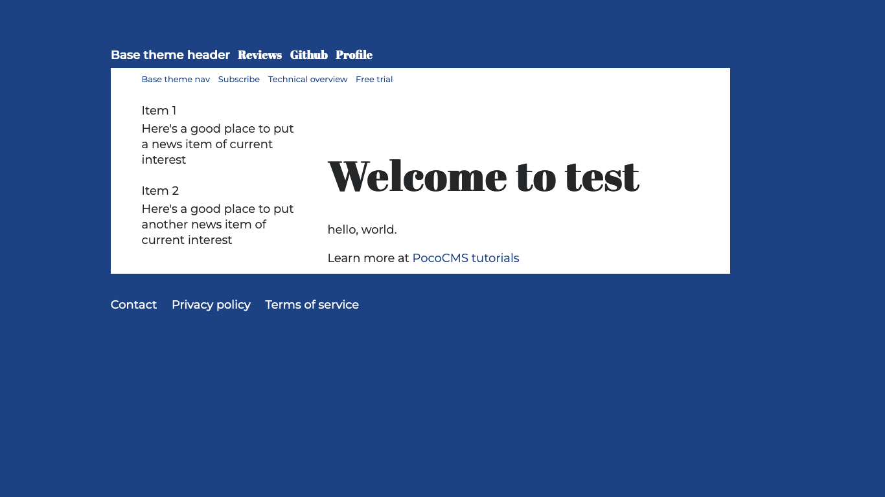
Add image to the aside
Recall that the aside has a round portrait on the aside. To get the same effect you'll need a square image of any size. It will be clipped to a circle using CSS. There are a few steps to get there.
Decide on image dimensions
If you just added the image to the aside it would look odd. Let's try that first.
- Open the file
.poco/themes/mytheme/aside.mdand replace its contents with this line of text:

(Feel free to supply your own image file in place of https://cdn.jsdelivr.net/gh/pococms/poco@main/.poco/demo/anna-256x256.jpg)
Here's what it looks like:
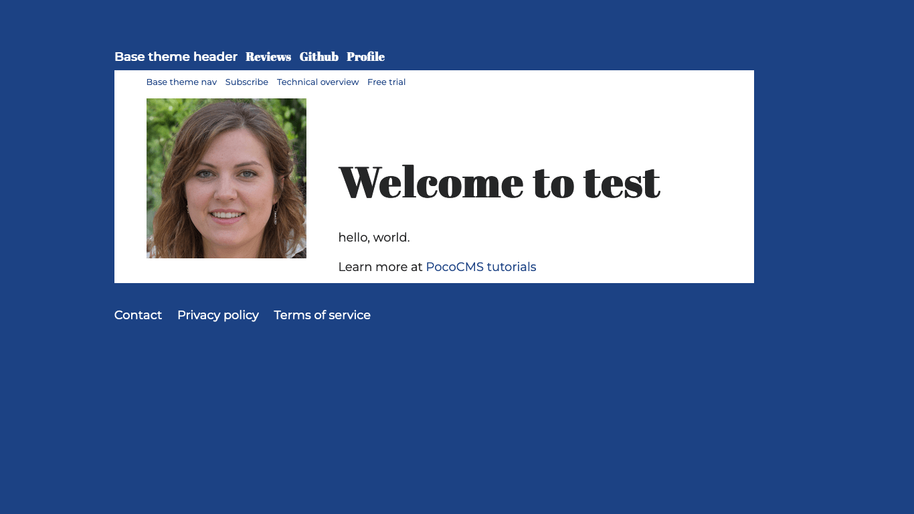
Way too big! That's becuase images by default take up 100% of their containing element. It makes sense for articles, but probably not for an aside. So we need to shrink it to fit the aside.
PocoCMS prefers relative image sizes because they're easier to scale, so in this demo we're going
to add a style constraining the image to 6rem in both length and width.
One rem is the height of a character in its containing unit, to simplify.
PocoCMS uses rem almost exclusively in its measurements.
Don't add the style yet but it starts out like this:
Image files always follow a paragraph
One quirk of Markdown is that if you have an image in a Markdown file, it always
follows a paragraph (<p> tag in HTML). Which means that this style will not work:
/* FAIL: constrain image in aside to 6rem x 6rem. */
aside>img {
width: 6rem;
height: 6rem;
}
At a minimum your style would have to look like this, but we're still not there yet:
/* Constrain image in aside to 6rem x 6rem. */
aside>p>img {
width: 6rem;
height: 6rem;
}
Clip image to circle format
You also need to clip the image so it appears in a circle. For various
reasons that are somewhat annoying to get into, you set the
border-radius to 50%:
/* Round 6rem x 6rem portrait in aside. */
aside>p>img {
width: 6rem;
height: 6rem;
border-radius: 50%;
}
It's worth experimenting with border-radius, which was largely designed
to created rounded corners.
For example, setting it to border-radius: .5rem would show the image as
a box with midly rounded corners.
Complete style for circular portrait in aside
The completed style is this. Copy and paste this under the OVERRIDE FRAMEWORK LAYOUT comment
in .poco/themes/mytheme/mytheme.css:
/* Round portrait in aside. */
aside>p>img {
width: 6rem;
height: 6rem;
overflow: hidden;
border-radius: 50%;
float:none;
margin: 0 auto;
text-align:center;
}
This is how it should look:
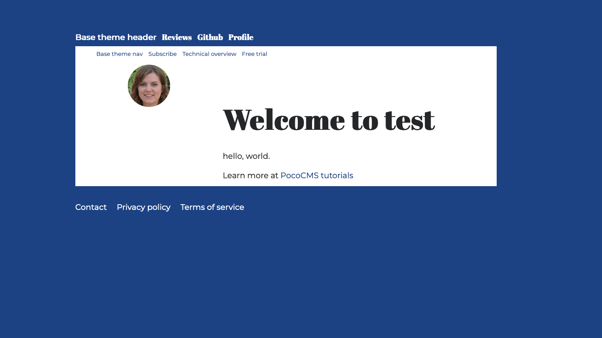
Adjust font size in aside
In this theme, the aside employs a smaller font size. Under
the OVERRIDE FRAMEWORK TYPOGRAPHY AND FONTS
comment in .poco/themes/mytheme/mytheme.css, add this override:
Filename: .poco/themes/mytheme/mytheme.css
aside>p{font-size:small;}
Append the following sample text to the aside file named .poco/themes/mytheme/aside.md after
the image tag, so the file looks like this:
Filename: .poco/themes/mytheme/aside.md

Hi. I'm Anna Utopia and this is my blog.
I studied design at Montreal's [Concordia University](https://www.concordia.ca/),
where I learned the importance of static site generators, a lesson
that transcends space and time.
I have been doing professional web design for almost 9 years
and have won multiple national awards. I have two rescue dogs and
can often be found online watching those heartending Dodo videos.
Here's the aside with text:
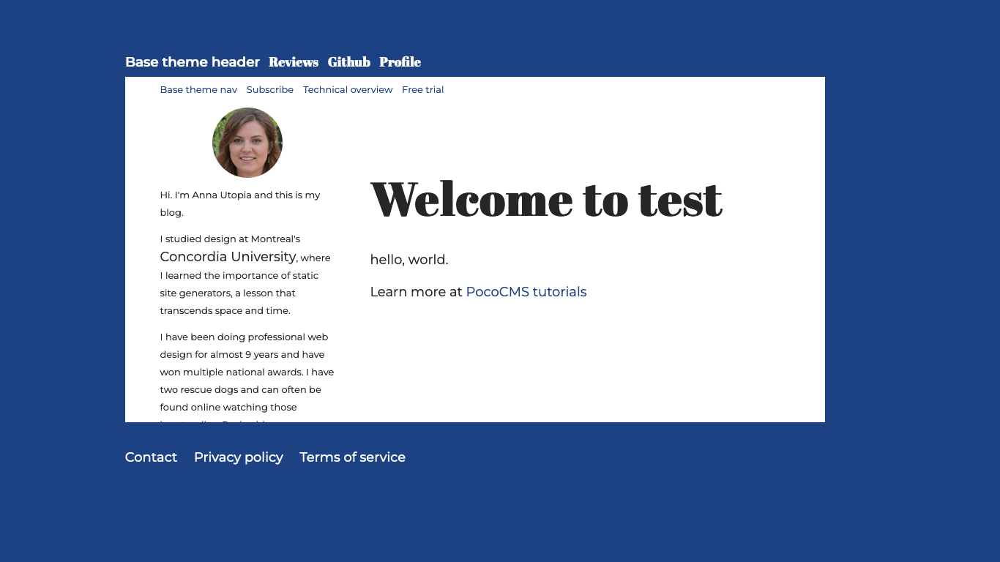
Note that the link text is bigger. That was an accident because an additional
rule should have been added in the CSS to be more specific than
aside>p{font-size:small;}, but it looks pretty good. We're leaving it as is.
(But if you wanted to make it boring, you'd add to the aside rule
you added a moment ago, you'd add ,aside>p>a to the
rule like this:)
Filename: .poco/themes/mytheme/mytheme.css
aside>p,aside>p>a{font-size:small;}
Create CSS for icons in aside
We are missing the icons in the aside, as shown in
Creating a PocoCMS theme with the framework
The markdown for them in .poco/themes/mytheme/aside.md shows some challenges.
It looks something like this. You should copy and paste this into a separate document
so you can see all of it at once, but we'll explain it next.
###### Connections
[](https://www.twitter.com) [](https://www.instagram.com) [](https://linkedin.com/) [](https://youtube.com) [](https://facebook.com/)
This looks intimidating but it's just a bunch of repeated patterns.
Clickable image links: a review
Recall from Clickable image links that this is the format of a clickable image link:
[](https://example.com)
Where:
(image-file.ext)is the filename or URL of the image to click(https://example.com)is the destination URL the user will click toalt-textis the text used for screen readers and doesn't normally display
Here is the Markdown for a complete clickable link:
[](https://www.twitter.com)
The image file twitter-24px-blue-outline.svg in this example can be any image
file you like, either local or a URL. In the
theme demo it's actually ../.poco/img/twitter-24px-blue-outline.svg but it's
easier to show the slightly simplified path for these examples. The whole
list of images creates a column of these clickable links.
When you look at the column of icons in the aside for the finished theme you can see they're much smaller than the 6em x 6em we already styled for the blogger's portrait. How does that happen? It's a key ingredient to the way PocoCMS themes are created: context.
How to get different image sizes for the icons in the aside
CSS lets you change an element's CSS based on its relationship with other elements.
If you wondered why the Markdown for the icons included the
line ###### Connections, it's because the context we are going to
use is a level 6 heading followed by the
icon files, which are image files like any other. They will
appear in a column, one per row.
Here's how we're going to style this column of icons:
/* Icons following an h6 in the aside */
aside>h6+p>a>img {
width: 2rem;
height: 2rem;
overflow: hidden;
float:none;
margin: 0;
text-align:left;
}
Let's look at this dense little bit of CSS. First is the rule, which
shows its context. The aside part means the aside, obviously. The
h6 means a level 6 heading inside that aside. The +p is a slightly
underused CSS rule that means the <p> paragraph tag must follow the
level 6 heading immediately. The >a following means it's a link,
and finally, the img is an image tag. Because it's a link, the
image is therefore clickable.
aside>h6+p>a>img {
}
The icons will be twice the size of a letter in the aside in both horizontal and vertical dimensions, hence this code:
aside>h6+p>a>img {
width: 2rem;
height: 2rem;
}
The rest is pretty straightforward. float:none means it
will be displayed with a new line following it. margin:0 makes sure there's no space pushing
in from the outside. text-align:left does just that, makes
sure the icon stays to the left.
aside>h6+p>a>img {
width: 2rem;
height: 2rem;
float:none;
margin: 0;
text-align:left;
}
The result is that no matter how many of these image links are
situated next to each other, they'll be displayed one per row,
in a left-justified column. So let's add it to the theme CSS file:
at .poco/themes/mytheme/mytheme.css:
Filename: .poco/themes/mytheme/mytheme.css
- Add the following text after the
OVERRIDE FRAMEWORK LAYOUTcomment:
/* Icons following an h6 in the aside */
aside>h6+p>a>img {
width: 2rem;
height: 2rem;
float:none;
margin: 0;
text-align:left;
}
- Append this text to
.poco/themes/mytheme/aside.md:
Filename: .poco/themes/mytheme/aside.md
###### Connections
[](https://www.twitter.com) [](https://www.instagram.com) [](https://linkedin.com/) [](https://youtube.com) [](https://facebook.com/)
And it now looks like this:
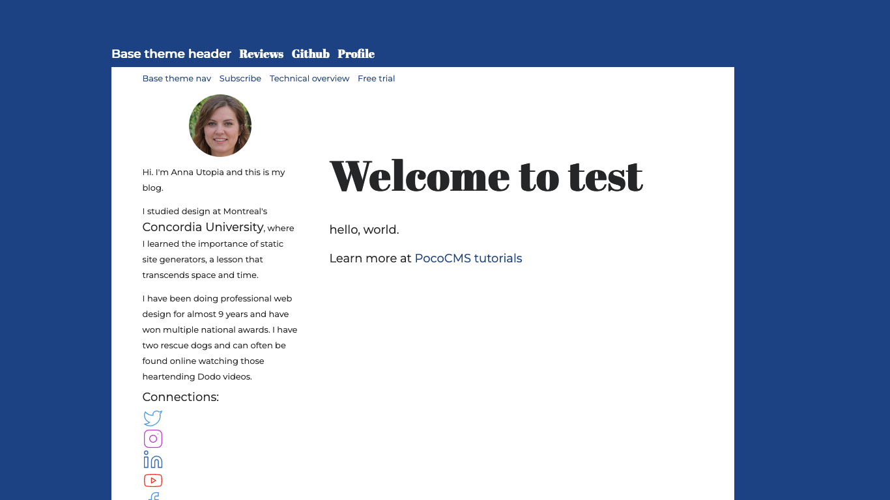
Add a row of images to the article byline
Look at the byline on the finished theme:
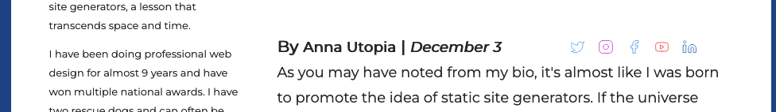
It shows a row of clickable images next to each other on the same line as a level 4 heading. We've gone through some of the basics of images in CSS so let's take a look at the style we'll be using.
/* Social media icons hang to right of level 4 heading text */
article>h4>a>img{
clear:none;
float:right;
margin-right:1rem;
margin-top:.2rem;
height:1.2rem;
width:1.2rem;
}
You now know that the rule article>h4>a>img applies to a link inside level 4 heading with an
image: a clickable link. height:1.2rem;width:1.2rem; tells you that the icon
is 1.2 times the height of the character in both vertical and horizontal dimensions,
keeping it square. You can put any size image there and it will be exactly 1.2rem square.
margin-right:1rem;margin-top:.2rem; fine-tune the spacing around the icon and aren't
very interesting.
The special sauce is here:
clear:none;
float:right;
float:right causes the image to float to the right of the level 4 heading text.
There is an odd side effect of the float:right we'll discuss in a moment.
Normally an image would be displayed on a line by itself. clear:none means the image isn't moved below the level 4 heading that precedes it.
- Add the CSS we've been studying under the
OVERRIDE FRAMEWORK LAYOUTin.poco/themes/mytheme/mytheme.css:
Filename: .poco/themes/mytheme/mytheme.css
/* Social media icons hang to right of level 4 heading text */
article>h4>a>img{
clear:none;
float:right;
margin-right:1rem;
margin-top:.2rem;
height:1.2rem;
width:1.2rem;
}
- Copy and paste this to replace the contents of your home page at
index.mdin your root directory:
Filename: .index.md
---
pagetheme: mytheme
hide: nav
aside: aside.md
---
##### Blog
# Static Site Generators
#### By **Anna Utopia** | *December 3* [](https://linkedin.com/) [](https://youtube.com/@pococms/) [](https://facebook.com/) [](https://www.instagram.com/) [](https://www.instagram.com)
As you may have noted from my bio, it's almost like I was born to
promote the idea of static site generators. If the universe actually
were a simulation, I would be a character designed solely to move
the idea of static site generators forward.
And the result is as it will be on the finished theme, although other elements on the page are still unfinished:
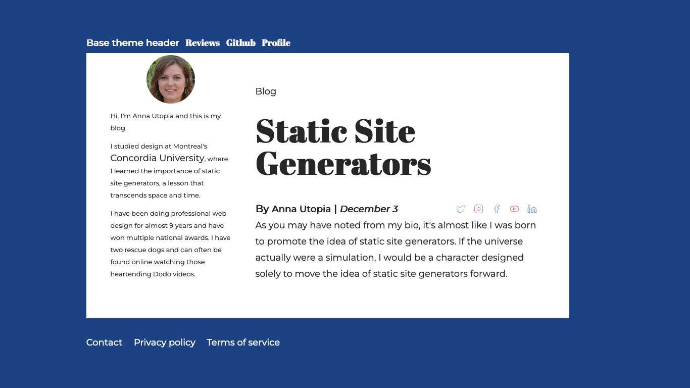
The burger menu
The PocoCMS theme framework supports hamburger menus, which replace the header at mobile sizes to save space on your screen. Let's take a look.
- Drag the corner of your web page inward to narrow its width to mobile phone size.
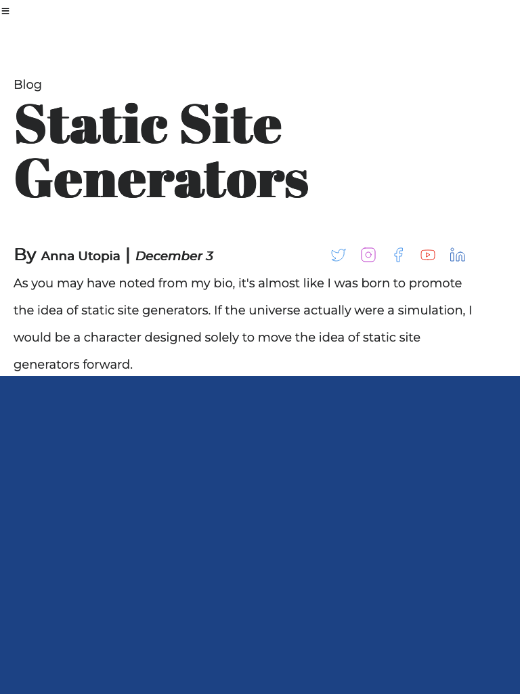
As you can see, the header is replaced by an icon that supposedly looks a bit like a hamburger, so it's called the hamburger or burger menu.
- Click the burger menu icon.
A new menu appears, different from the one in the wide version of the header.
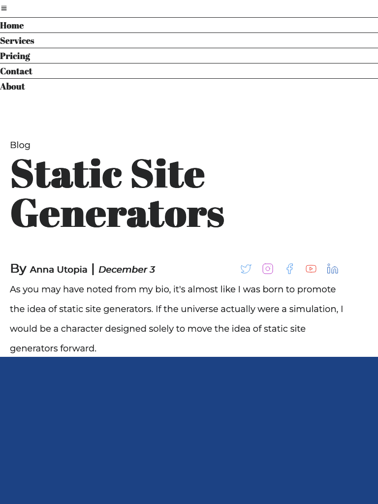
You can alter the appearance of the burger menu. First let's replace the icon with something
understandable, like, say... the word menu.
Replace burger menu icon with text
Find the burgericon: line in your theme README.md file at .poco/themes/mytheme/README.md:
Filename: .poco/themes/mytheme/README.md
burgericon: "☰"
The HTML Unicode value is just one way to represent the hamburger icon, but we're going to nuke it completely and replace it with a word.
- Change the value of the
burgericon:rule in your theme README.md file at.poco/themes/mytheme/README.mdto the wordmenu:
Filename: .poco/themes/mytheme/README.md
burgericon: "menu"
Reverse the burger menu icon colors
- Add this code to
.poco/themes/mytheme/mytheme.cssafter the commentOVERRIDE MEDIA QUERIES. COLORS FOR LIGHT & DARK THEMES:
:root {
--burger-menu-padding:1em;
--burger-menu-fg:var(--bg);
--burger-menu-bg:var(--fg);
}
It's not in either the dark or light theme sections because it applies to both.
- Look at the burger menu now:
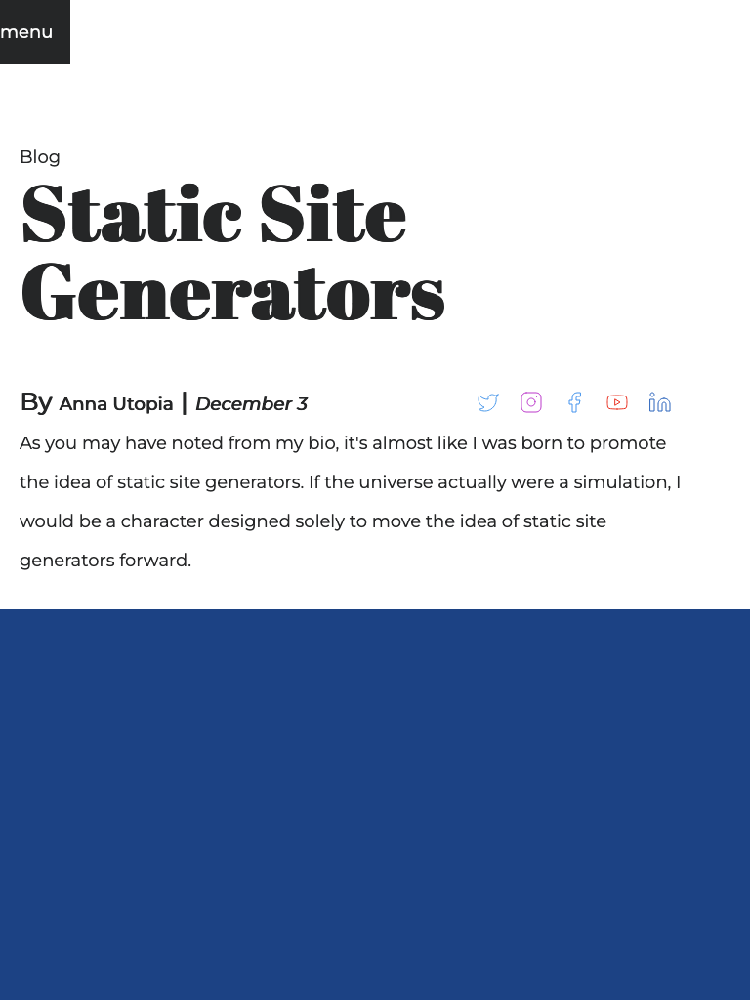
Edit the burger menu links
Let's imagine that this blog needs different links for the burger menu.
- Open the file
.poco/themes/mytheme/burger.md, which is pointed to by theburgerportion of your theme README.md file.
The file can be named anything, for example. newburger.md, as long as you change the
file burger points to. By convention the PocoCMS theme framework just uses the name
of the layout element as its filename.
The contents are an unordered list of links, same as most headers and navs.
Filename: .poco/themes/mytheme/burger.md
- [Home](/)
- [Services](#)
- [Pricing](#)
- [Contact](#)
- [About](#)
- Edit the list like this. Feel free to replace these links with your own.
Filename: .poco/themes/mytheme/burger.md
* [Home](/)
* [Graphic design](#)
* [Themes for sale](#)
Here are the new links:
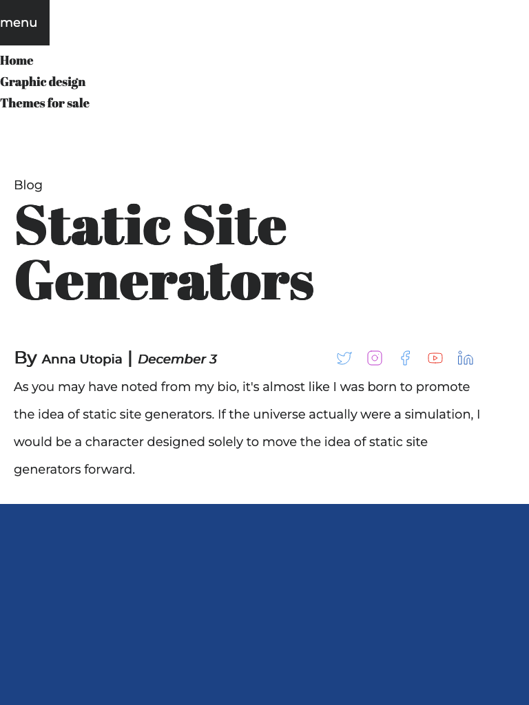